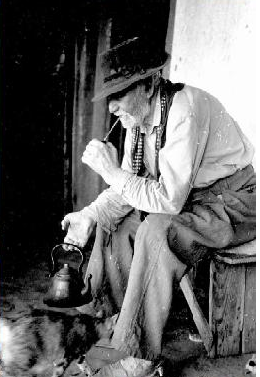

|  | SHOWS2011 - 7. Edição- A confirmar2010 - 6. Edição- Quinta-feira: Tertúlia Livre - João Chagas Leite - Chama de Galpão- Sexta-feira: César Oliveira e Rogério Melo - Chama de Galpão 2009 - 5. Edição- Quinta-feira: Tertúlia Livre - João Chagas Leite - Chama de Galpão- Sexta-feira: Joca Martins - Chama de Galpão 2008 - 4. Edição- Quinta-feira: Tertúlia Livre - Chama de Galpão- Sexta-feira: Xirú Missioneiro - Chama de Galpão 2007 - 3. Edição- Quinta-feira: Tertúlia Livre - Chama de Galpão- Sexta-feira: Oswaldir e Carlos Magrão - Chama de Galpão 2006 - 2. Edição- Quinta-feira: Tertúlia Livre - Chama de Galpão- Sexta-feira: Tertúlia Livre - Chama de Galpão 2005 - 1. Edição- Quinta-feira: Tertúlia Livre- Sexta-feira: Tertúlia Livre |